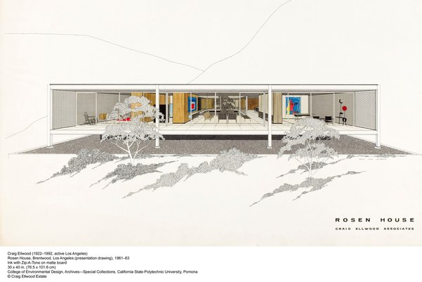
CRVI003394Unknown - Untitled
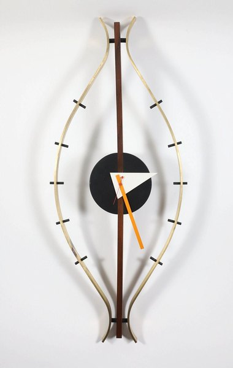
CRVI003399Unknown - Untitled
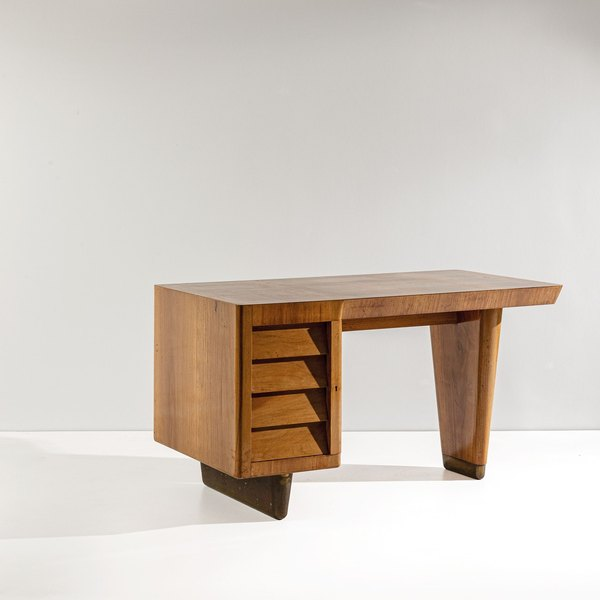
CRVI003408Unknown - Untitled
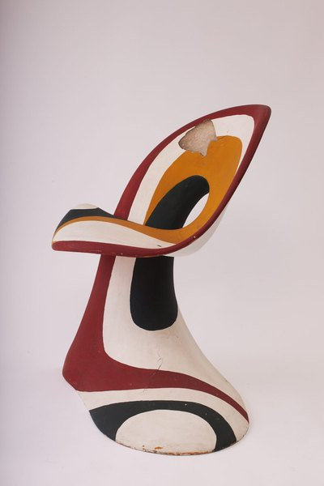
CRVI003402Unknown - Untitled
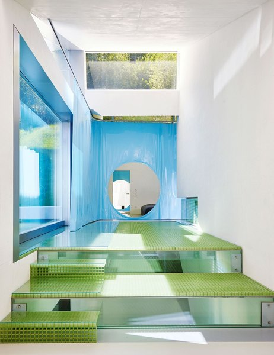
CRVI003412Unknown - Untitled
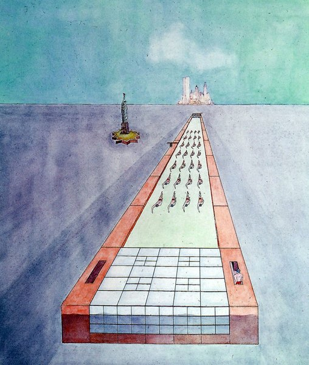
CRVI003410Unknown - Untitled
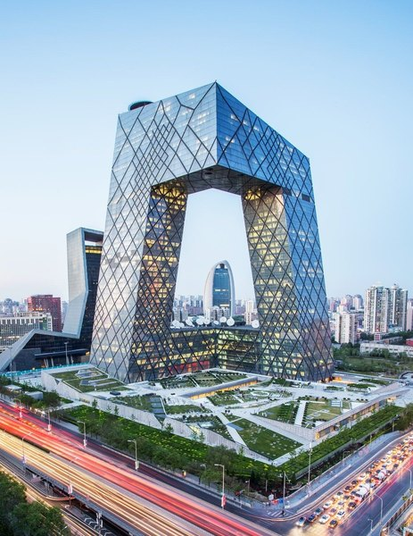
CRVI003411Unknown - Untitled

CRVI003124Luis Barragán - Untitled interior
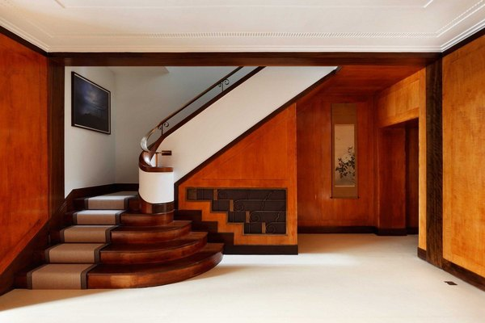
CRVI003409Unknown - Untitled
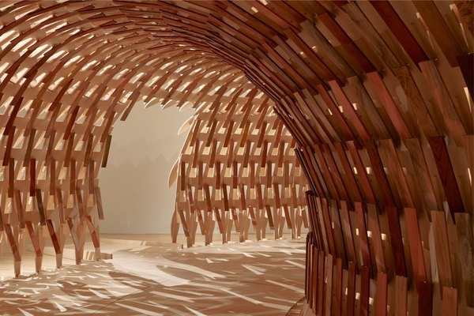
CRVI003398Unknown - Untitled
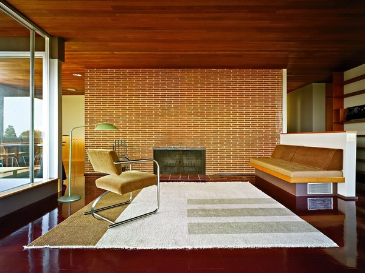
CRVI003390Unknown - Untitled
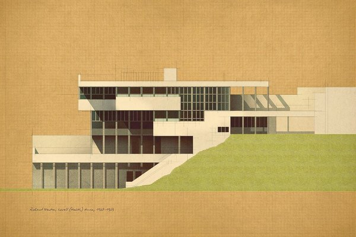
CRVI003391Unknown - Untitled
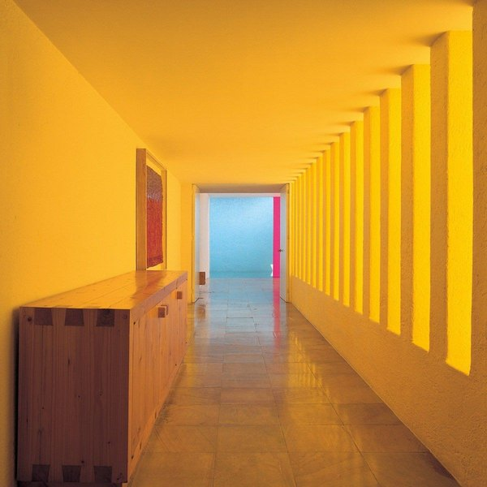
CRVI003126Luis Barragán - Untitled
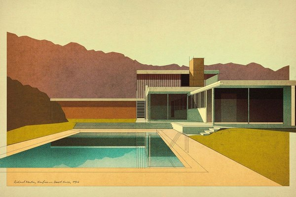
CRVI003387Unknown - Untitled
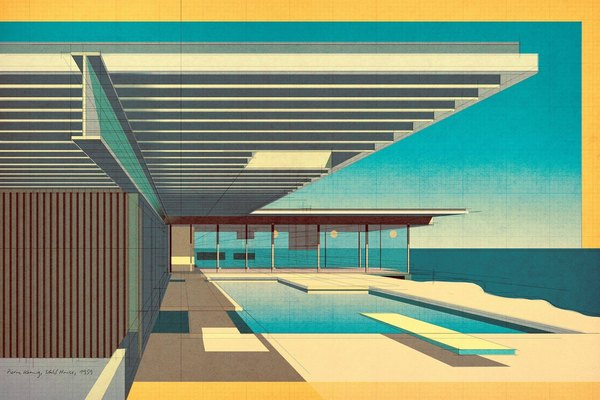
CRVI003396Unknown - Untitled
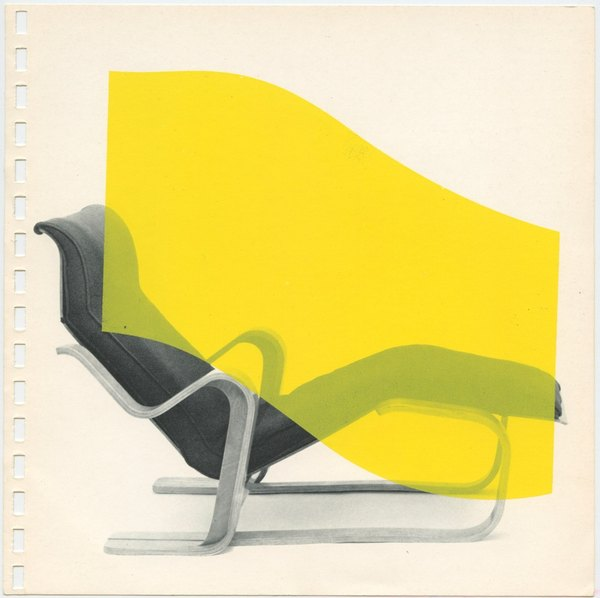
CRVI003417Unknown - Untitled
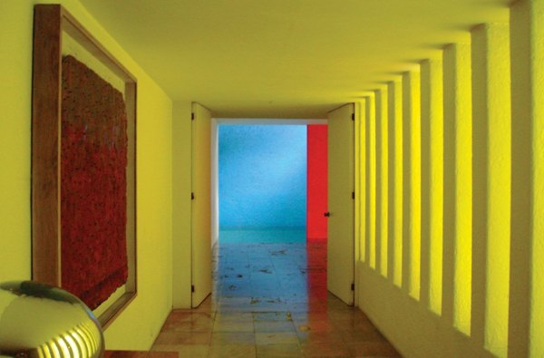
CRVI003125Luis Barragán - Casa Gilardi, interior
1977
1977
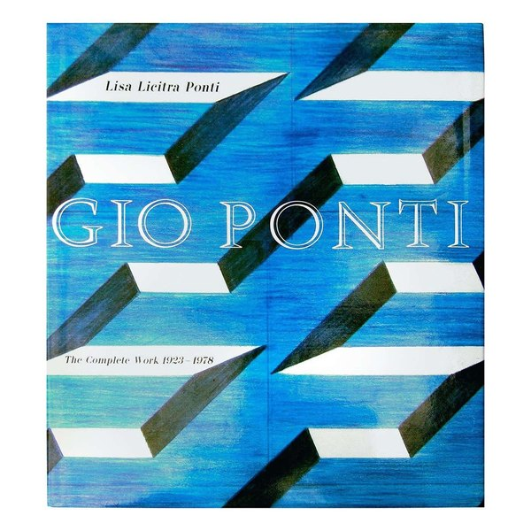
CRVI003427Unknown - Untitled

CRVI003197Frank Gehry - Untitled building
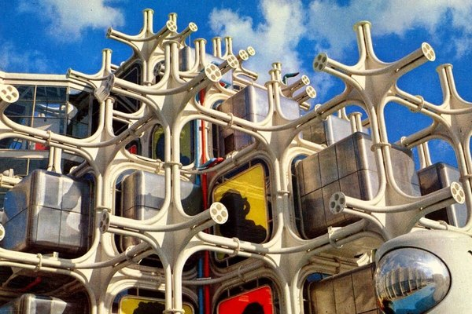
CRVI003401Unknown - Untitled
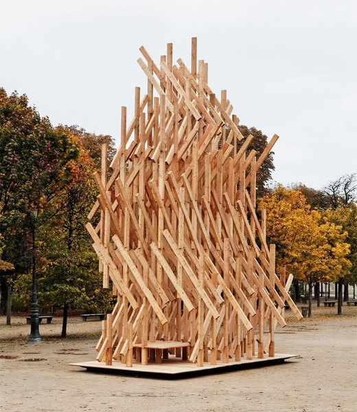
CRVI003397Unknown - Untitled
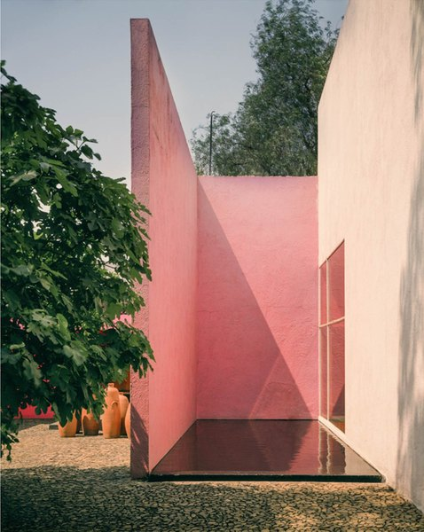
CRVI003123Luis Barragán - Untitled interior
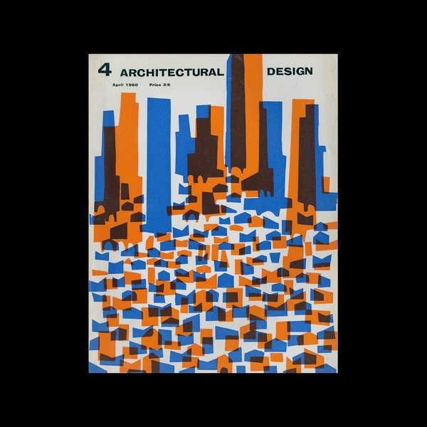
CRVI003404Unknown - Untitled
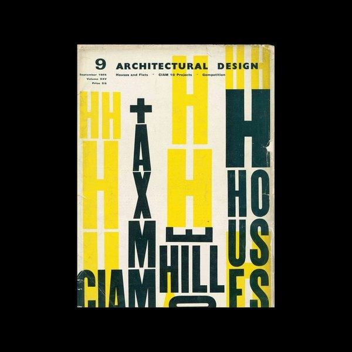
CRVI003405Unknown - Untitled
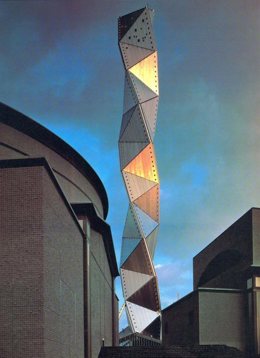
CRVI003414Unknown - Untitled

CRVI003198Frank Gehry - Walt Disney Concert Hall
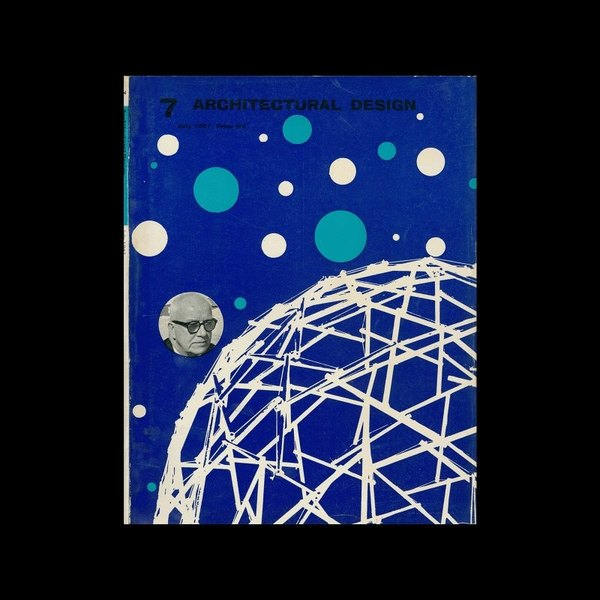
CRVI003403Unknown - Untitled
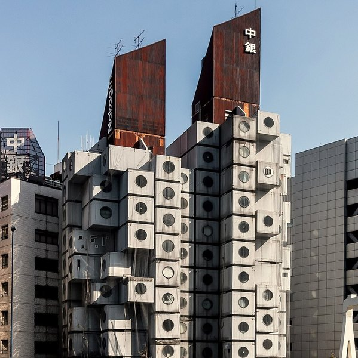
CRVI003400Unknown - Untitled
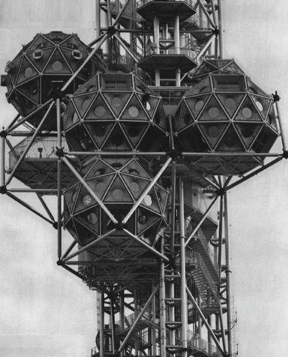
CRVI003416Unknown - Untitled
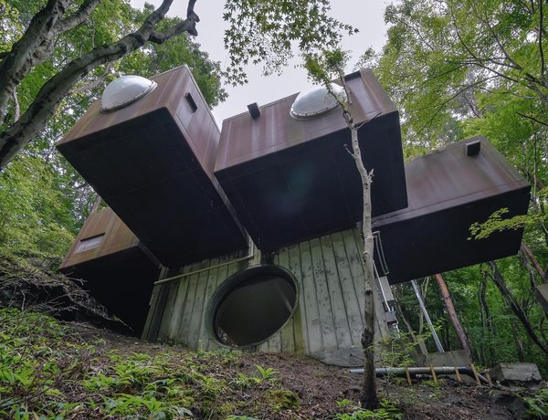
CRVI003413Unknown - Untitled
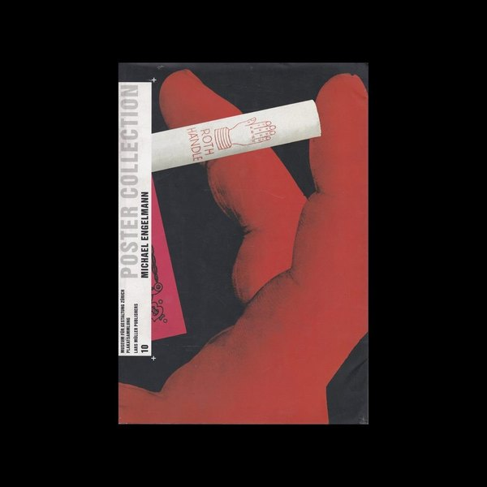
CRVI003406Unknown - Untitled